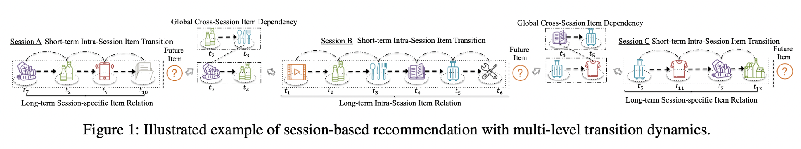
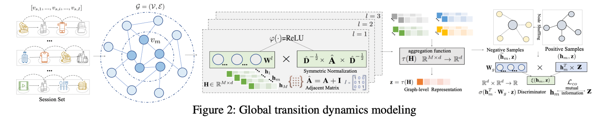
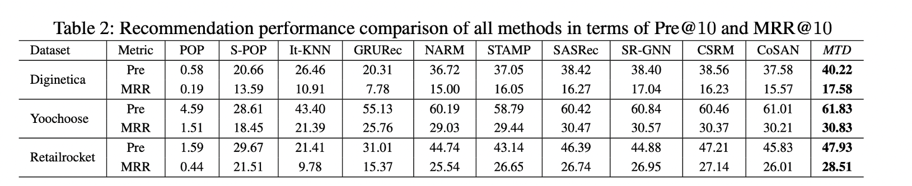
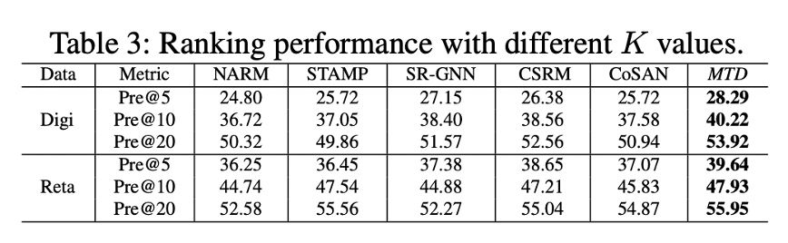
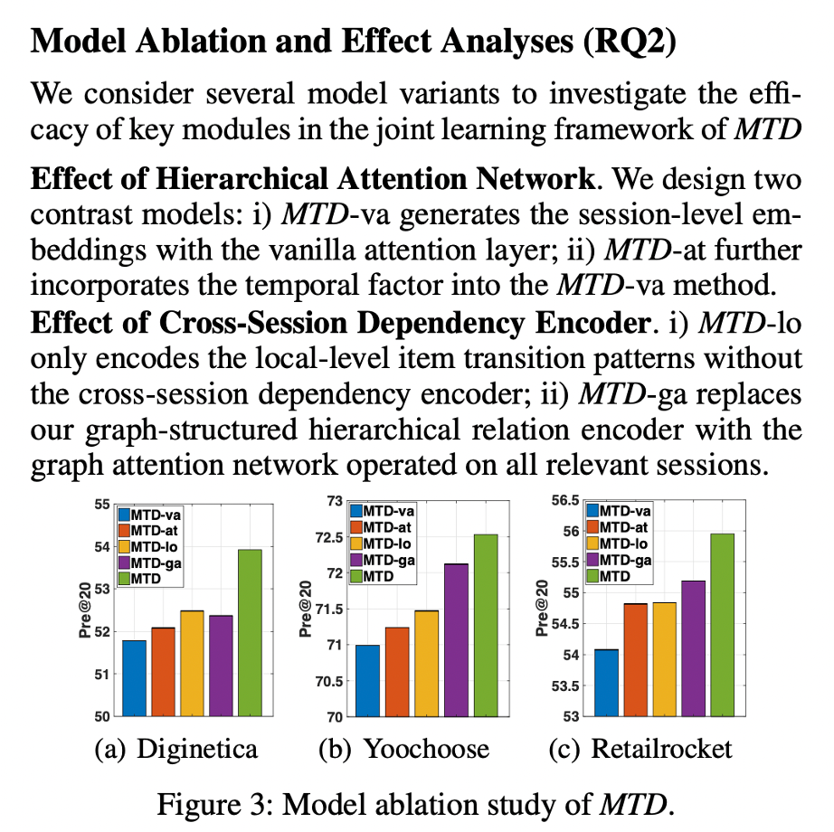
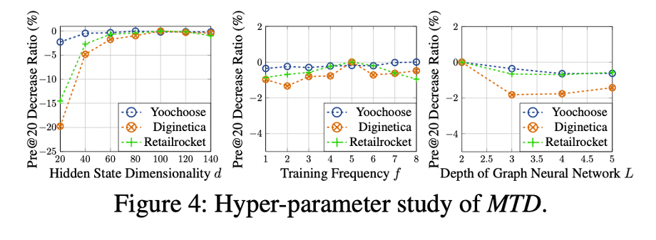

ABSTRACT
problem
not well-designed for capturing the complex transition dynamics exhibited with temporally-ordered and multi-level inter-dependent relation structures.

solve
propose a multi-task learning framework with Multi-level Transition Dynamics (MTD) which include :
- position-aware attention mechanism
- a graph-structured hierarchical relation encoder
METHODOLOGY
Intra-Session Item Relation Learning
Self-Attentive Item Embedding Layer
通过自注意力将item的原始embedding \(\mathbf E_s \in\mathbb R^{I\times
d}\)转化为潜在表征. \[
{\left[\begin{array}{l}
\mathbf{Q} \\
\mathbf{K} \\
\mathbf{V}
\end{array}\right]=\mathbf{E}_{s}\left[\begin{array}{l}
\mathbf{W}_{Q} \\
\mathbf{W}_{K} \\
\mathbf{W}_{V}
\end{array}\right] ; \operatorname{Att}(\mathbf{Q}, \mathbf{K},
\mathbf{V})=\delta\left(\frac{\mathbf{Q}
\mathbf{K}^{T}}{\sqrt{d}}\right) \mathbf{V}} \] $X_{s} R^{I
d}=(Q, K, V) $为session \(s\)
中item的潜在表示,\(\delta\)为
softmax
紧接着再经过FFN增强非线性表征 \[
\widetilde{\mathbf{X}}_{s}=\operatorname{FFN}\left(\mathbf{X}_{s}\right)=\varphi\left(\mathbf{X}_{s}
\cdot \mathbf{W}_{1}+\mathbf{b}_{1}\right) \cdot
\mathbf{W}_{2}+\mathbf{b}_{2} \] 其中\(\varphi\)为ReLu激活函数
Position-aware Item-wise Aggregation Module
会话内，与用户未来会感兴趣的商品更相关的商品赋予更高权重 \[
\alpha_{i}=\delta\left(\mathbf{g}^{T} \cdot \sigma\left(\mathbf{W}_{3}
\cdot \mathbf{x}_{s, I}+\mathbf{W}_{4} \cdot \mathbf{x}_{s,
i}\right)\right) \] 其中\(\delta\)为softmax,\(\sigma\)为sigmoid。
aggregated session representation： \[\mathbf{X}_{s}^{*}=\sum_{i=1}^{I} \alpha_{i}
\cdot \mathbf{X}_{s, i}\] 注入位置信息 \[
\mathbf{p}_{s}=\sum_{i=1}^{I} \omega_{i} \cdot \mathbf{x}_{s, i} ; \quad
\omega_{i}=\propto \exp (|i-I|+1) \] 拼接后的session s 表示:
\[
\mathbf{q}_{s}=\mathbf{W}_{c}\left[\mathbf{x}_{s, I},
\mathbf{x}_{s}^{*}, \mathbf{p}_{s}\right], \mathbf{w h e r e}
\mathbf{W}_{c} \in \mathbb{R}^{d \times 3 d} \] 经过和目标商品
\(v_n\)
做内积后在经过sigmoid得到最终的分数 \[\tilde{y}_{n}=\sigma\left(q_{s}^{T} v_{n}\right)
\]
损失函数 \[\mathcal{L}_{i n}=-\sum_{n}^{N} \mathbf{y}_{n} \log \left(\tilde{\mathbf{y}}_{n}\right)+\left(1-\mathbf{y}_{n}\right) \log \left(1-\tilde{\mathbf{y}}_{n}\right) \]
Global Transition Dynamics Modeling

GCN信息传播 \[\mathbf{H}^{(l+1)}=\varphi\left(\mathbf{A}, \mathbf{H}^{l} \mathbf{W}^{l}\right)=\varphi\left(\hat{\mathbf{D}}^{-\frac{1}{2}} \hat{\mathbf{A}} \hat{\mathbf{D}}^{-\frac{1}{2}} \mathbf{H}^{l} \mathbf{W}^{l}\right)\] Global Dependency Representation
- capture the high-order global dependencies across correlated items from different sessions
- a fused graph-level embedding with the aggregation function \(\mathbf Z=\tau(\mathbf H),\tau\)是average pooling
- a classifier $({m}, )=({m}^{T} _{g} ) ; ^{d} ^{d} ^{2} $
The loss function of graph-level global dependency representation component \[\mathcal{L}_{c o}=-\frac{1}{N_{p o s}+N_{n e g}}\left(\sum_{i=1}^{N_{p o s}} \rho\left(\mathbf{h}_{m}, \mathbf{z}\right) \cdot \log \xi\left(\mathbf{h}_{m}, \mathbf{z}\right)+\sum_{i=1}^{N_{n e g}} \rho\left(\widetilde{\mathbf{h}}_{m}, \mathbf{z}\right) \cdot \log \left[1-\xi\left(\widetilde{\mathbf{h}}_{m}, \mathbf{z}\right)\right]\right) \]
Learning Process of MTD
总损失函数 \[\mathcal{L}=\mathcal{L}_{c r}+\lambda_{1} \mathcal{L}_{co}+\lambda_{2}\|\Theta\|_{2}^{2}\] employ mini-batch Adam to optimize \(\mathcal{L}_{c r}\) and \(\mathcal{L}_{co}\) alternatively
EXPERIMENTS
   